Objetivo
Al terminar tendrás una escena fruta.tscn reutilizable: una manzana animada que, al tocarla la rana, reproduce la animación recoger y luego se borra con queue_free(). Pondrás varias en el nivel.
Partimos de: El proyecto del tutorial 3. En assets/frutas hay ocho frutas (tiras de 17 dibujos) y recoger.png, el destello al recogerlas.
Nodos y conceptos
Area2DZona que detecta cuerpos que entran o salen, sin chocar con ellos. Perfecta para cosas que se recogen.
GrupoEtiqueta que se pone a un nodo desde el panel Grupos. Con is_in_group("jugador") sabemos si el cuerpo que entra es la rana.
body_enteredSeñal del Area2D: avisa cuando entra un cuerpo y nos lo pasa como body.
animation_finishedSeñal del AnimatedSprite2D: avisa cuando termina una animación sin bucle.
queue_free()Borra el nodo (y sus hijos) en cuanto Godot puede hacerlo sin problemas.
Paso a paso
1Punto de partida
Abre el proyecto. En assets/frutas están las frutas: cada imagen es una tira de 17 dibujos que hacen girar la fruta. recoger.png es el destello que sale al cogerla.
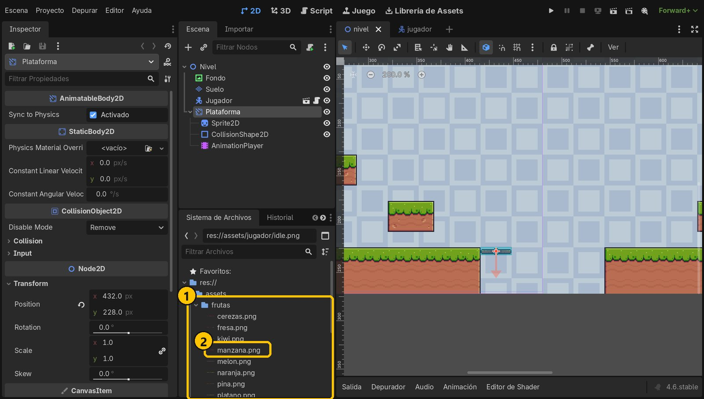
- 1Carpeta frutas
- 2manzana.png
2Nueva escena con un Area2D
Crea una escena nueva (Ctrl+N), elige Otro Nodo y busca Area2D. Renómbralo a Fruta.
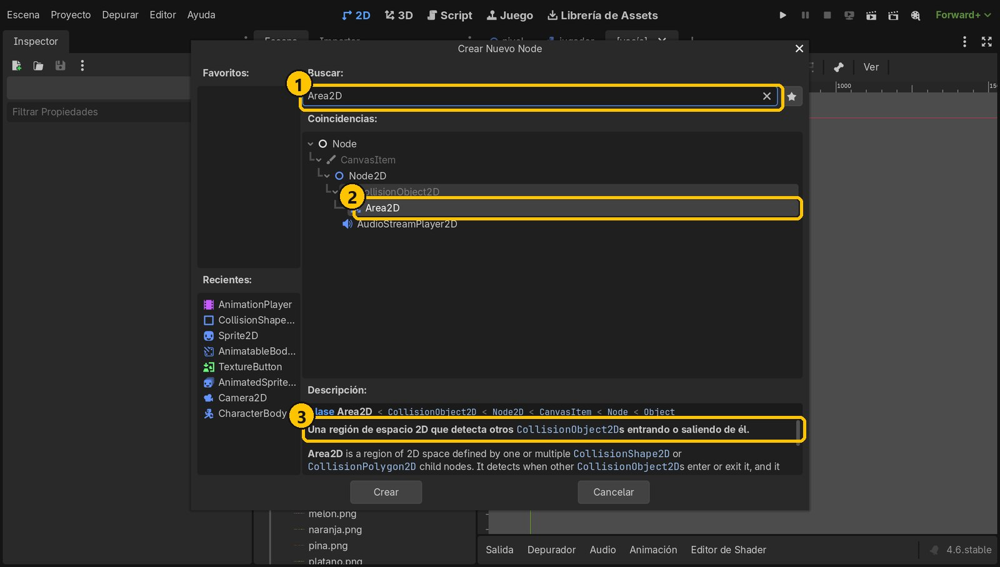
- 1Area2D
- 2Area2D
- 3Detecta lo que entra
3Animación idle de la manzana
Añade a Fruta un AnimatedSprite2D con un Nuevo SpriteFrames. Renombra default a idle y añade fotogramas desde la hoja manzana.png: 17 × 1, Elegir Todo, Añadir. Ponla a 20 FPS, con bucle y con autoplay.
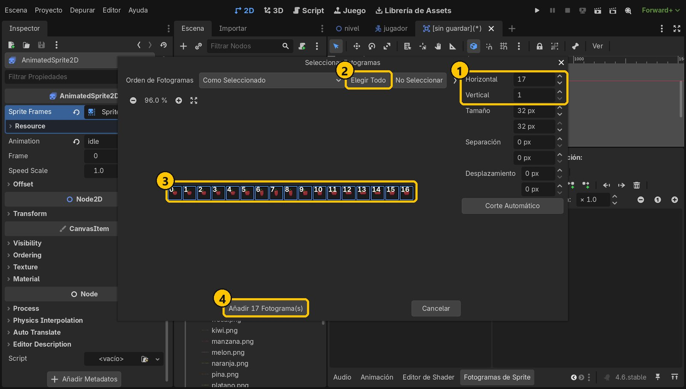
- 117 × 1
- 2Elegir Todo
- 317 fotogramas
- 4Añadir
4Animación recoger
Añade otra animación, recoger, con la hoja recoger.png (6 × 1), a 20 FPS y sin bucle: el destello se ve una sola vez.
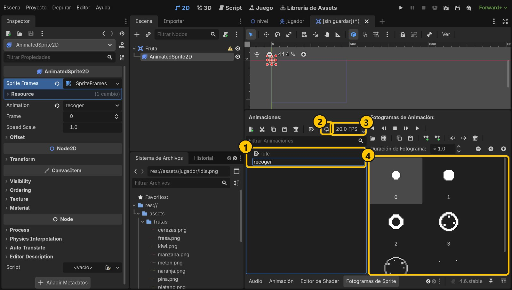
- 1idle y recoger
- 2Sin bucle
- 320 FPS
- 4Destello
5Forma de colisión
Añade a Fruta un CollisionShape2D con un Nuevo CircleShape2D de radio 7: cubre la manzana. Guarda la escena como fruta.tscn.
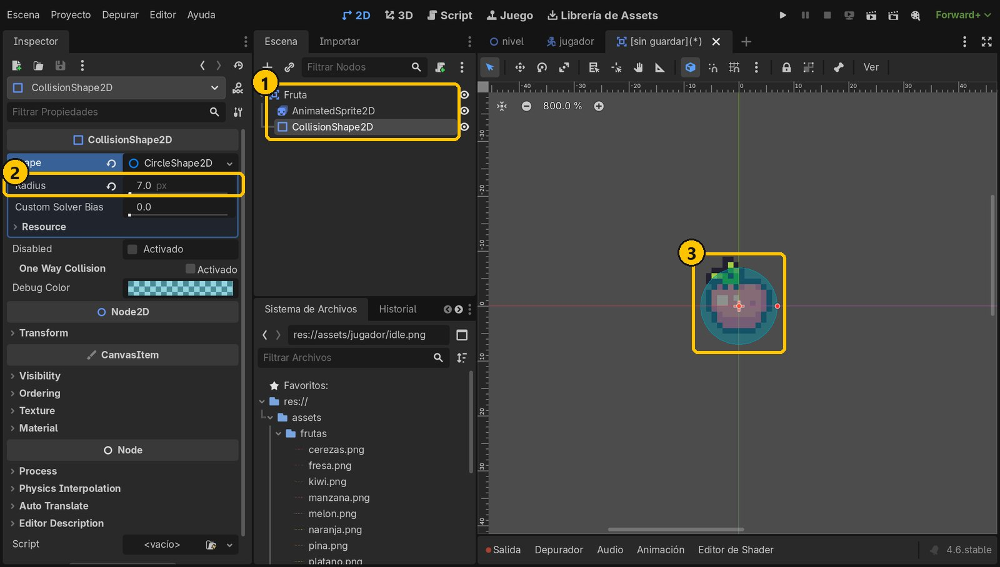
- 1La escena Fruta
- 2Radio 7
- 3Cubre la manzana
6Pon al jugador en un grupo
Abre jugador.tscn y selecciona Jugador. En el panel Grupos, pulsa +, escribe jugador y acepta. Aparece un icono junto al nodo. Guarda.
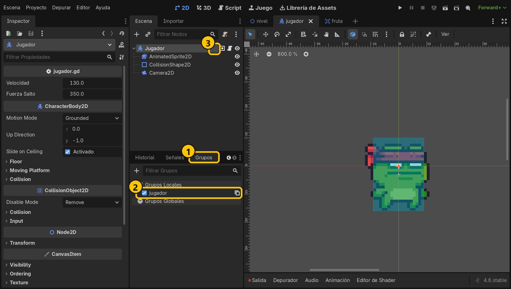
- 1Panel Grupos
- 2Grupo jugador
- 3Icono de grupo
7Script y señal body_entered
Vuelve a fruta.tscn, añade un script a Fruta (sin plantilla, fruta.gd). En el panel Señales, haz doble clic en body_entered, comprueba que el receptor es Fruta y pulsa Conectar.
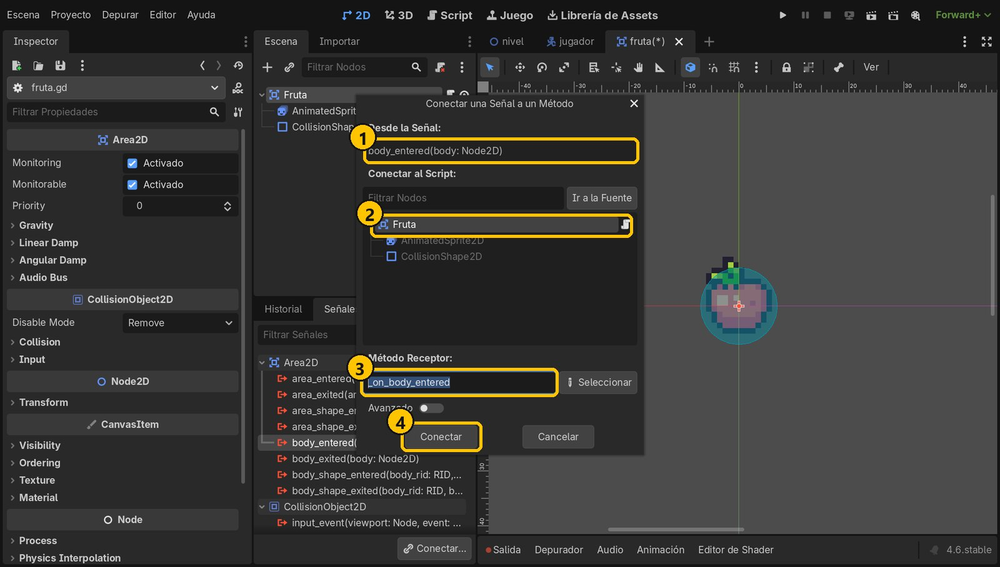
- 1body_entered
- 2Receptor: Fruta
- 3_on_body_entered
- 4Conectar
8Señal animation_finished
Selecciona el AnimatedSprite2D, y en Señales haz doble clic en animation_finished. Elige Fruta como receptor (la que tiene el script) y pulsa Conectar.
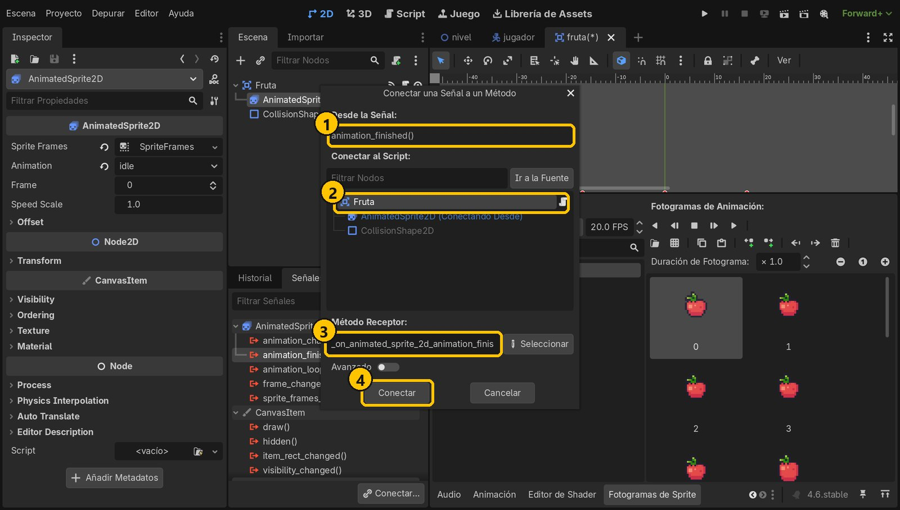
- 1animation_finished
- 2Receptor: Fruta
- 3Nombre de la función
- 4Conectar
9Escribe el código
Godot ya ha creado las dos funciones. En la primera, si lo que entra es del grupo jugador, mostramos un mensaje y reproducimos recoger. En la segunda, cuando el destello termina, la fruta se borra.
extends Area2D
func _on_body_entered(body: Node2D) -> void:
# Solo la recoge el jugador
if body.is_in_group("jugador"):
print("¡Fruta recogida!")
$AnimatedSprite2D.play("recoger")
func _on_animated_sprite_2d_animation_finished() -> void:
# Al terminar la animación «recoger», la fruta desaparece
queue_free()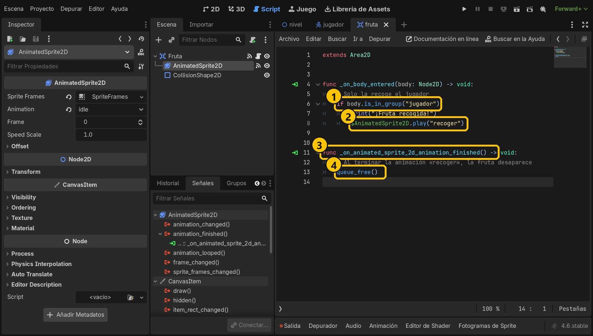
- 1¿Es el jugador?
- 2Destello
- 3Al acabar el destello
- 4Se borra
10Pon frutas en el nivel
En nivel.tscn, selecciona Nivel e instancia fruta.tscn. Colócala sobre una isla y duplícala con Ctrl+D para poner más (por ejemplo en 152, 164, 256, 116, 344, 164, 680, 164 y 800, 116). Guarda.
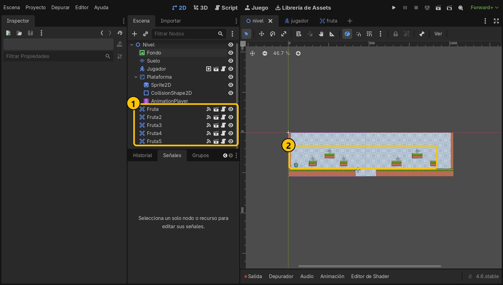
- 1Cinco frutas
- 2Sobre las islas
11Ejecuta y recoge
Ejecuta con F5 y salta a por las frutas. Al tocarlas, hacen un destello y desaparecen.
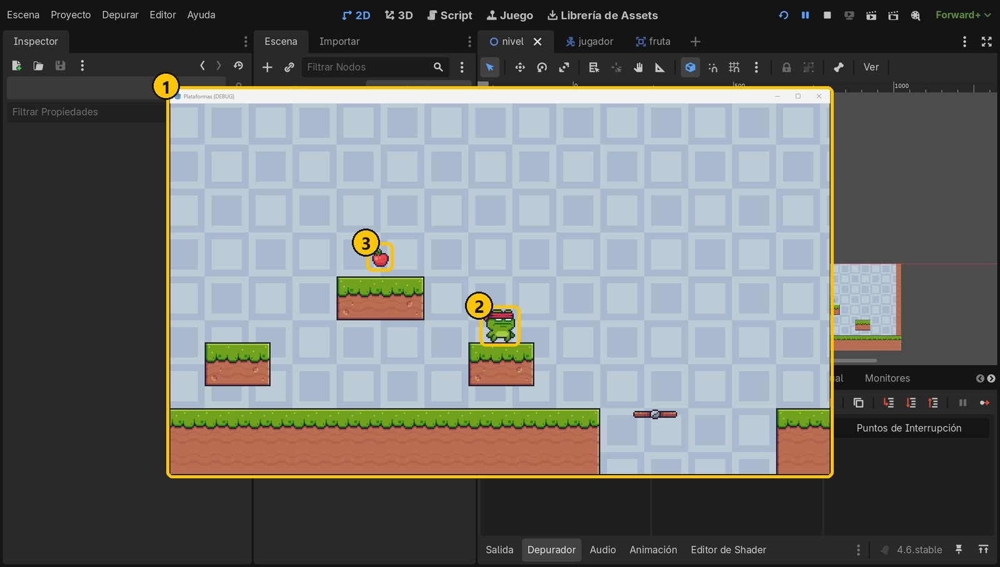
- 1El juego
- 2Fruta recogida
- 3A por la siguiente
12Mira la salida
Al parar el juego, en el panel Salida aparece un «¡Fruta recogida!» por cada fruta. En el próximo tutorial las contaremos de verdad.
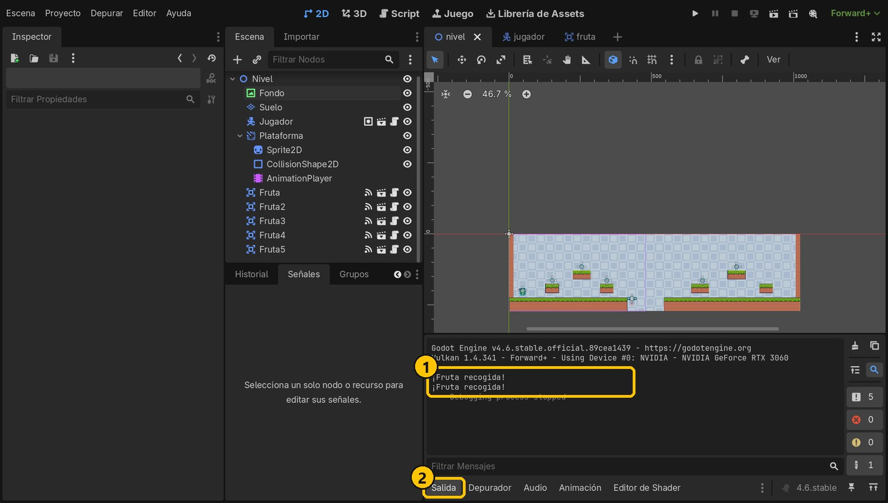
- 1Un mensaje por fruta
- 2Panel Salida
Resumen
- Un Area2D detecta al jugador con la señal
body_entered. - Los grupos sirven para saber qué tipo de cuerpo ha entrado.
- La señal
animation_finishedespera al destello antes de borrar la fruta conqueue_free().
Si algo falla
- La fruta no desaparece. La animación recoger debe ir sin bucle: si se repite,
animation_finishednunca llega. - No pasa nada al tocarla. Mira que Jugador esté en el grupo
jugador(exactamente así, en minúsculas) y que las funciones tengan el icono verde de señal conectada. - La fruta no se anima en el juego. Activa el autoplay de la animación idle.
- Error al conectar animation_finished: la función no existe. El receptor debe ser Fruta (el nodo con el script), no el AnimatedSprite2D.
Prueba tú
- Crea otras frutas: duplica
fruta.tscn(clic derecho → Duplicar) y cambia la hoja de la animación idle porplatano.pngofresa.png. - Haz que la fruta no se pueda recoger dos veces: desactiva su forma con
$CollisionShape2D.set_deferred("disabled", true)al tocarla. - Cambia el mensaje para que diga qué fruta has cogido usando
name.